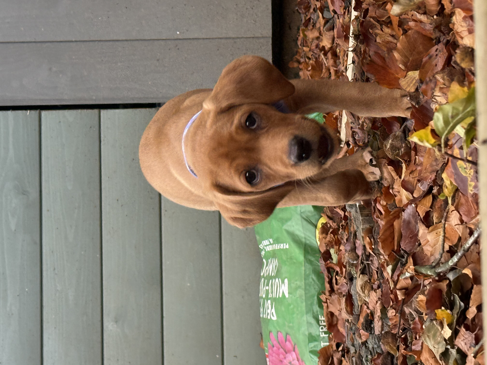

TillyTag
Have you found the Wilson’s beloved pet?
If you have found this pet or spotted them out and about, you could help reunite a much-loved family member with their family.
REPORT A SIGHTING
Help Tilly get home
Thank you for taking the time to help. Every sighting could make a difference.
- Tap the green Report a Sighting button.
- Complete the short report form with the details you know.
- Include where and when you saw the pet, if possible.
About Tilly
Tilly is a beloved member of the Wilson family. Thank you for helping keep her safe and helping her family stay informed.
Tag information
This page is part of the TillyTag pet identification project.
Tag ID: TT-DEMO-001
Please share only the information needed to report a sighting. Avoid posting private contact details publicly. Reports submitted through the button are sent using Google Forms.